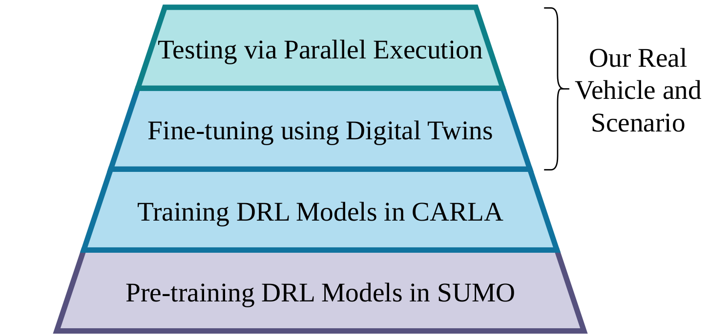

A Curriculum Approach to Bridge the Reality Gap in Autonomous Driving Decision-Making based on Deep Reinforcement Learning
In submission
Sensors 2026
Authors: R. Gutiérrez-Moreno, R. Barea, E. López-Guillén, F. Arango, F. Sánchez-García, L. M. Bergasa
Authors: R. Gutiérrez-Moreno, R. Barea, E. López-Guillén, F. Arango, F. Sánchez-García, L. M. Bergasa